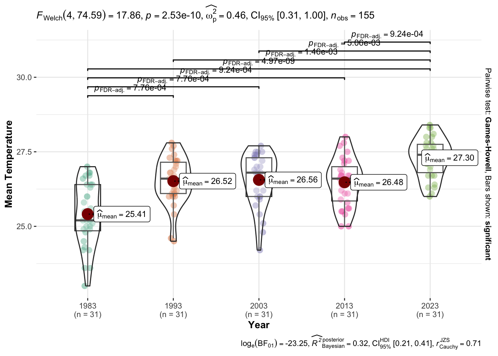

pacman::p_load(ggplot2, dplyr, tidyverse,
ggstatsplot, forecast, plotly, hrbrthemes,
lubridate)Be Weatherwise or Otherwise!
In this exercise, we will be implementing appropriate interactive techniques to enhance the user experience in data discovery and/or story telling through an analytics-driven data visualisation.
1. Overview
According to the infographic published by the National Climate Change Secretariat (NCCS), the daily mean temperature is projected to increase by 1.4°C to 4.6°C by 2100.
In this exercise, visual interactivity and uncertainty visualisation methods will be employed to validate the claim presented above.
2. Preliminary Set-Up
2.1 Loading Relevant R Packages
The following code chunk uses the pacman::p_load() function to install and load the relevant R packages:
2.2 Importing Historical Weather Dataset
The historical daily temperature data was downloaded from the Meteorological Service Singapore website.
For simplicity, only the daily temperature records for the month of December across the years 1983, 1993, 2003, 2013 and 2023 collected by the weather station in Changi will be analysed.
A Date column will be added by merging the Day, Month and Year columns and converted to Date format using as.Date() to facilitate subsequent time-series analysis.
Code
data <- read_csv("Data/December.csv", show_col_types = FALSE)
data <- data[,c("Year", "Month", "Day", "Mean Temperature (°C)",
"Maximum Temperature (°C)", "Minimum Temperature (°C)")]
data <- data %>% rename("Mean Temperature" = "Mean Temperature (°C)",
"Maximum Temperature" = "Maximum Temperature (°C)",
"Minimum Temperature" = "Minimum Temperature (°C)")
# Adding date column
data$Date <- as.Date(with(data, paste(Year, Month, Day,sep="-")), "%Y-%m-%d")
# Adding index column
data <- data[with(data, order(Year, Day)), ]
data$Index <- seq(from=1, to=nrow(data))
head(data, 5)# A tibble: 5 × 8
Year Month Day `Mean Temperature` `Maximum Temperature`
<dbl> <dbl> <dbl> <dbl> <dbl>
1 1983 12 1 26.4 31
2 1983 12 2 24.3 27.2
3 1983 12 3 25.1 30.2
4 1983 12 4 25.2 30.3
5 1983 12 5 26 29.8
# ℹ 3 more variables: `Minimum Temperature` <dbl>, Date <date>, Index <int>3. Visualisation of Daily Temperature Patterns
3.1 Visual Statistical Analysis of Historical Daily Temperature Data
To ascertain whether daily temperatures have been displaying an upward trend, a One-Way ANOVA Test will be conducted with the following hypothesis:
H0: There is no difference in mean daily temperatures across all years.
H1: The mean daily temperatures for at least one year is different.
Code
ggbetweenstats(data = data,
x = Year, y = "Mean Temperature",
type = "p",
mean.ci = TRUE,
pairwise.comparisons = TRUE,
pairwise.display = "s",
p.adjust.method = "fdr",
messages = FALSE)
The p-value is less than 0.05, indicating that there is sufficient evidence to reject the null hypothesis and conclude that the difference between the mean temperatures for each year is statistically significant. There is an overall increase from 25.41°C in 1983 to 27.30°C in 2023. However, the increase is not consistent across all years as there is is a slight dip from 26.56°C in 2003 to 26.48°C in 2013.
From the statistical test and its visualisation, we are confident that mean daily temperatures displayed an upward trend from 1983 to 2023. With the historical trend in daily temperatures, we will move on to the next section to forecast the upcoming trend in mean daily temperatures till 2100.
3.2 Forecasting Daily Temperatures
To predict daily temperatures till 2100, linear regression will be used for simplicity. By leveraging historical daily temperature data, the linear regression model is trained to identify trends and patterns in temperature changes over time to provide insights into potential future temperature trends.
While linear regression is rather limited for long-term predictions due to its assumption of a linear relationship, it it inherently simple and offers a straightforward approach to modelling the relationship between variables. Linear regression will be performed using the lm() function from the stats package.
# Predicting future minimum temperatures using linear regression
lm_min <- lm(data$`Minimum Temperature` ~ data$Index)
summary(lm_min)
Call:
lm(formula = data$`Minimum Temperature` ~ data$Index)
Residuals:
Min 1Q Median 3Q Max
-3.3800 -0.3867 0.0589 0.5650 1.4349
Coefficients:
Estimate Std. Error t value Pr(>|t|)
(Intercept) 23.204156 0.127068 182.612 < 2e-16 ***
data$Index 0.012395 0.001413 8.772 3.21e-15 ***
---
Signif. codes: 0 '***' 0.001 '**' 0.01 '*' 0.05 '.' 0.1 ' ' 1
Residual standard error: 0.7872 on 153 degrees of freedom
Multiple R-squared: 0.3346, Adjusted R-squared: 0.3303
F-statistic: 76.94 on 1 and 153 DF, p-value: 3.21e-15# Predicting future mean temperatures using linear regression
lm_mean <- lm(data$`Mean Temperature` ~ data$Index)
summary(lm_mean)
Call:
lm(formula = data$`Mean Temperature` ~ data$Index)
Residuals:
Min 1Q Median 3Q Max
-2.84043 -0.53462 0.05953 0.65061 1.71249
Coefficients:
Estimate Std. Error t value Pr(>|t|)
(Intercept) 25.534512 0.144611 176.574 < 2e-16 ***
data$Index 0.011766 0.001608 7.316 1.34e-11 ***
---
Signif. codes: 0 '***' 0.001 '**' 0.01 '*' 0.05 '.' 0.1 ' ' 1
Residual standard error: 0.8958 on 153 degrees of freedom
Multiple R-squared: 0.2592, Adjusted R-squared: 0.2543
F-statistic: 53.53 on 1 and 153 DF, p-value: 1.341e-11# Predicting future maximum temperatures using linear regression
lm_max <- lm(data$`Maximum Temperature` ~ data$Index)
summary(lm_max)
Call:
lm(formula = data$`Maximum Temperature` ~ data$Index)
Residuals:
Min 1Q Median 3Q Max
-5.6310 -0.8814 0.3262 1.2489 3.2547
Coefficients:
Estimate Std. Error t value Pr(>|t|)
(Intercept) 29.103301 0.289307 100.597 < 2e-16 ***
data$Index 0.012604 0.003217 3.918 0.000134 ***
---
Signif. codes: 0 '***' 0.001 '**' 0.01 '*' 0.05 '.' 0.1 ' ' 1
Residual standard error: 1.792 on 153 degrees of freedom
Multiple R-squared: 0.09117, Adjusted R-squared: 0.08523
F-statistic: 15.35 on 1 and 153 DF, p-value: 0.00013443.3 Interactive Visualisation of Daily Mean Temperature
Code for preparing data for visualisation
# Calculate mean temperature by year
mean_temp <- data %>%
group_by(Year) %>%
summarise(mean_temp = mean(`Mean Temperature`)) %>%
slice(rep(1:n()))
data <- merge(mean_temp, data, by="Year")
# Creating dataframe for mean labels
mean_label <- data.frame(Day=rep(20, nrow(data)),
`Mean Temperature`=c(25.00, 26.15, 26.20, 26.15, 27.00),
Year=c(1983, 1993, 2003, 2013, 2023),
label=c("Mean=25.41°C", "Mean=26.52°C", "Mean=26.56°C",
"Mean=26.48°C", "Mean=27.30°C"))
# Creating column for projected daily temperatures
data$`Projected Mean` <- 0.011766*data$Index + 25.534512
# Creating dataframe for forecasted mean, minimum and maximum
projections <- data.frame("Index" = seq(156, 403)) # To project to 2100
projections$Day <- rep(seq(1,31), 8)
projections$Month <- 12
projections$Year <- rep(c(2033, 2043, 2053, 2063, 2073, 2083, 2093, 2103), each=31)
projections$`Projected Minimum` <- 0.012395*(projections$Index) + 23.204156
projections$`Projected Mean` <- 0.011766*(projections$Index) + 25.534512
projections$`Projected Maximum` <- 0.012604*(projections$Index) + 29.103301
projections$Date <- as.Date(with(projections, paste(Year, Month, Day,sep="-")), "%Y-%m-%d")
data <- bind_rows(data, projections)
# Creating dataframe for annotation
annotate <- data.frame(value = numeric())
annotate <- rbind(annotate,
list(value=filter(data, Date == '2103-12-31')$`Projected Minimum`),
list(value=filter(data, Date == '2103-12-31')$`Projected Mean`),
list(value=filter(data, Date == '2103-12-31')$`Projected Maximum`))
rownames(annotate) <- c("Forecasted Minimum Temperature", "Forecasted Mean Temperature",
"Forecasted Maximum Temperature")The interactive plot below has a few notable features:
Visualisation of Uncertainty: The range of possible daily temperatures was plotted as the grey shaded area around the line graph for mean daily temperature. The minimum band represents the lower bound of uncertainty and is indicated by the minimum daily temperatures while the maximum band represents the upper bound of the uncertainty and is indicated by the maximum daily temperatures. By visualising uncertainty this way, viewers can quickly grasp the range of potential daily temperature values to understand the level of confidence or uncertainty associated with the daily temperature data presented.
Mean Temperature Line: The mean daily temperature (horizontal dark blue line) is plotted to show the average Mean Daily Temperature for each year, with the exact average value annotated in dark blue. This allows viewers to accurately identify the mean daily temperatures across all years to understand the overall change in daily temperatures over the years.
Linear Regression Line with Uncertainty Visualisation: The forecasted daily temperatures till 2100 developed using linear regression was plotted as the red line. The uncertainty of the forecast was estimated using the linear regression projection of the daily minimum and maximum temperatures and was plotted as the red shaded area around the linear regression line. The minimum, mean and maximum temperatures for 31/12/2103 was annotated in red to aid in the validation of the claim of “daily mean temperature is projected to increase by 1.4°C to 4.6°C by 2100”.
Interactivity: The plot is interactive as it allows viewers to zoom in on specific time periods of interests using the slider at the bottom of the plot.
Design Considerations
If the data is plotted as is, there would be large gaps in the line plot due to missing data in the months of January to November. This will compress the actual data points in December, causing the plot to be illegible. To avoid this, an uninterrupted daily temperature history was plotted by hiding missing time periods using the
rangebreaksattribute. Other alternatives such as a stacked line plot (one line for each year) were considered but it resulted in a cluttered plot that obscured the overall trend of increasing temperatures over the years.The uncertainty visualisation was represented using the minimum and maximum bands. The
fillwas set to “tonexty” to create an area plot with interior filling, with the Maximum Daily Temperature and Minimum Daily Temperature being set as the upper and lower bound respectively. To overlay the scatter plot over the uncertainty ribbon, theadd_trace()function was used.The line plot has to be inserted after the uncertainty visualisation plot so that it will not be buried under the confidence interval band, thus allowing for clearer visibility.
The mean lines for each year have to be plotted individually using
add_trace()to ensure that the mean lines are not connected from one year to the next.A slider was inserted at the bottom of the plot using
rangesliderto allow users to zoom in on specific time periods of interest by adjusting the range on the slider.Tick labels were set for the x-axis using the
ticktextandtickvalsargument in thelayoutattribute to ensure that every start of the year was labelled for increased clarity.The hover information was disabled for the mean lines by setting the
hoverinfo='skip'. The hover information was unnecessary since it is a horizontal line and only cluttered the interactivity features.The hover information was customised using the
hoverinfoandtextarguments.Annotations were added for the forecasted temperature on 31/12/2103 in order to validate the claim mentioned above. Annotations were added using the
add_anotations()function.
Code for Visualising Historical Daily Temperatures
fig <-
# Setting up uncertainty interval using daily minimum and maximum temperatures
plot_ly(data=filter(data, Year <= '2023'),
x=~Date, y=~`Minimum Temperature`,
type='scatter', mode='lines',
# Setting line to transparent
line=list(color='rgba(211, 211, 211, 0)')) %>%
add_trace(y=~`Maximum Temperature`,
type='scatter', mode='lines',
line=list(color='rgba(211, 211, 211, 0)'),
# Setting fill to opacity of 0.3
fill='tonexty', fillcolor='rgba(211, 211, 211, 0.3)') %>%
# Setting up line plot for historical daily mean temperature
add_trace(x=~Date, y=~`Mean Temperature`,
type='scatter', mode='lines+markers',
marker=list(color="#88CDF6", size=5),
line=list(color="#88CDF6", width=1.5),
hoverinfo='text',
text= ~paste('</br> Date: ', Date,
'</br> Mean Temperature: ', `Mean Temperature`, "°C"))
fig <- fig %>%
# Setting up mean line
add_trace(data=filter(data, Year == '1983'),
x=~Date, y=~mean_temp,
type='scatter', mode='lines',
line=list(color='#015C92', width=1.5),
# Disabling hover information
hoverinfo='skip') %>%
# Adding annotation for mean line
layout(annotations=list(x="1983-12-20", y=25.00, text="Mean=25.41°C", showarrow=FALSE,
font=list(color="#015C92", size=9))) %>%
add_trace(data=filter(data, Year == '1993'),
x=~Date, y=~mean_temp,
type='scatter', mode='lines',
line=list(color='#015C92', width=1.5),
hoverinfo='skip') %>%
layout(annotations=list(x="1993-12-20", y=26.15, text="Mean=26.52°C", showarrow=FALSE,
font=list(color="#015C92", size=9))) %>%
add_trace(data=filter(data, Year == '2003'),
x=~Date, y=~mean_temp,
type='scatter', mode='lines',
line=list(color='#015C92', width=1.5),
hoverinfo='skip') %>%
layout(annotations=list(x="2003-12-20", y=26.20, text="Mean=26.56°C", showarrow=FALSE,
font=list(color="#015C92", size=9))) %>%
add_trace(data=filter(data, Year == '2013'),
x=~Date, y=~mean_temp,
type='scatter', mode='lines',
line=list(color='#015C92', width=1.5),
hoverinfo='skip') %>%
layout(annotations=list(x="2013-12-20", y=26.15, text="Mean=26.48°C", showarrow=FALSE,
font=list(color="#015C92", size=9))) %>%
add_trace(data=filter(data, Year == '2023'),
x=~Date, y=~mean_temp,
type='scatter', mode='lines',
line=list(color='#015C92', width=1.5),
hoverinfo='skip') %>%
layout(annotations=list(x="2023-12-20", y=27.00, text="Mean=27.30°C", showarrow=FALSE,
font=list(color="#015C92", size=9))) Code for Visualising Forecasted Daily Temperatures
fig <- fig %>%
# Setting up linear regression line
add_trace(data=filter(data, Year >= '2033'),
x=~Date, y=~`Projected Mean`,
type='scatter', mode='lines',
line=list(color='#8F0000', width=1.5),
# Formatting hover text information
hoverinfo='text',
text = ~paste('</br> Date: ', Date,
'</br> Forecasted Mean Temperature', format(round(`Projected Mean`,2)), '°C')) %>%
# Setting up uncertainty interval using forecasted minimum and maximum temperatures
add_trace(data=filter(data, Year >= '2033'),
x=~Date, y=~`Projected Minimum`,
type='scatter', mode='lines',
line=list(color='rgba(241, 169, 160, 0'),
hoverinfo='text',
text = ~paste('</br> Date: ', Date,
'</br> Forecasted Minimum Temperature', format(round(`Projected Minimum`,2)), '°C')) %>%
add_trace(y=~`Projected Maximum`,
type='scatter', mode='lines',
line=list(color='rgba(241, 169, 160, 0)'),
fill='tonexty', fillcolor='rgba(241, 169, 160, 0.3)',
hoverinfo='text',
text = ~paste('</br> Date: ', Date,
'</br> Forecasted Maximum Temperature', format(round(`Projected Maximum`,2)), '°C'))Code for Formatting Layout of Visualisation
fig %>%
layout(showlegend=FALSE, # Switching off legend
xaxis=list(
# Specifying range of dates for plot
range=c("1983-12-01", "2103-12-31"),
# Hiding time periods with missing data
rangebreaks=list(
list(bounds=list("1984-01-01", "1993-12-01")),
list(bounds=list("1994-01-01", "2003-12-01")),
list(bounds=list("2004-01-01", "2013-12-01")),
list(bounds=list("2014-01-01", "2023-12-01")),
list(bounds=list("2024-01-01", "2033-12-01")),
list(bounds=list("2034-01-01", "2043-12-01")),
list(bounds=list("2044-01-01", "2053-12-01")),
list(bounds=list("2054-01-01", "2063-12-01")),
list(bounds=list("2064-01-01", "2073-12-01")),
list(bounds=list("2074-01-01", "2083-12-01")),
list(bounds=list("2084-01-01", "2093-12-01")),
list(bounds=list("2094-01-01", "2103-12-01"))),
# Inserting range slider for time period selection
rangeslider=list(type=Date,
range=c("1983-12-01", "2103-12-31")),
# Specifying tick labels
ticktext=list("1983", "1993", "2003", "2013", "2023", "2033", "2043",
"2053", "2063", "2073", "2083", "2093", "2103"),
tickvals=list("1983-12-01", "1993-12-01", "2003-12-01", "2013-12-01",
"2023-12-01", "2033-12-01", "2043-12-01", "2053-12-01",
"2063-12-01", "2073-12-01", "2083-12-01", "2093-12-01", "2103-12-01"),
# Labelling x-axis
title="Date"),
# Labelling y-axis
yaxis=list(title="Daily Temperature (°C)"),
# Labelling plot
title="Daily temperatures for December in Changi are expected to \nincrease through to 2100") %>%
add_annotations(x="2103-12-31", y=annotate$value,
text= ~paste(rownames(annotate), ": ", format(round(annotate$value,2)), "°C", sep=""),
xref="x", yref="y",
xanchor="right", ay=c(10, -10, 10),
showarrow=TRUE, arrowhead=4, arrowsize=0.5, arrowcolor="#8F0000",
font = list(size=10, color="#8F0000"))From the visualisation, the following can be inferred:
Seasonality in daily mean temperatures was observed across all years from 1983 to 2023.
Daily mean temperatures displayed an overall increase from 25.41°C in 1983 to 27.30°C in 2023.
Based on forecasts from the linear regression model, daily minimum, mean and maximum temperatures are expected to reach 28.20°C, 30.28°C and 34.18°C by 31 December 2103. The claim of “daily mean temperature is projected to increase by 1.4°C to 4.6°C by 2100” is thus supported. Daily mean temperatures are projected to increase from 27.30°C in 2023 to 30.28°C in 2103. The 2.98°C increase thus falls within the range projected by NCCS and supports its claim. If the upper band of the projection is used, daily temperature is projected to increase from 27.30°C in 2023 to 34.18°C in 2103. The 6.88°C increase falls outside the range projected by NCCS and paints a grimmer image for climate change in Singapore.